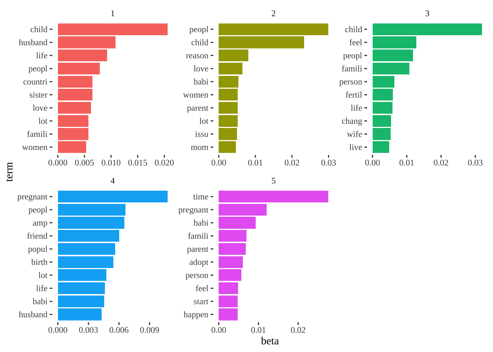
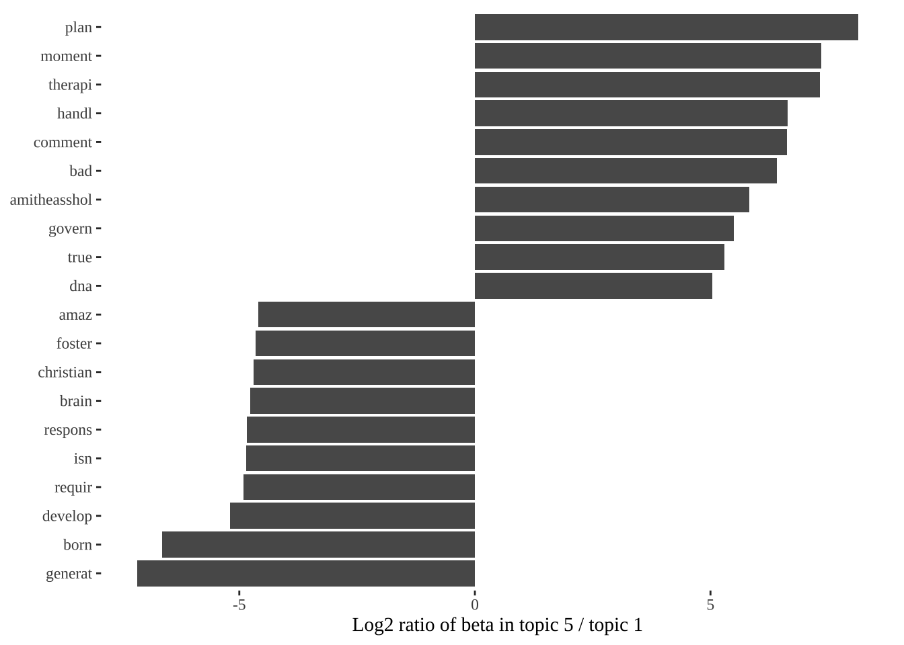

#Topic models package that allows tidying such models with ggplot2 and dplyr
library(topicmodels)
#A framework for text mining applications within R.
library(tm)
#The Life-Changing Magic of Tidying Text
library(tidytext)
# Snowball Stemmers Based on the C 'libstemmer' UTF-8 Library
library(SnowballC)
# Data manipulation
library(tidyverse)
#Create Elegant Data Visualisations Using the Grammar of Graphics
library(ggplot2)
library(ggthemes)
# Reddit Data Extraction Toolkit
library(RedditExtractoR)
# Flexibly Reshape Data
library(reshape2)
# Estimation of Structural Topic Models
library (stm)7 Topic Modelling
Topic modelling is part of the larger topic of text data mining. Text mining is the process of transforming unstructured text into a structured format to identify meaningful patterns. In text mining, we often have collections of documents, such as news articles, blog posts, academic papers and much more. We often want to divide these documents into natural groups so that we can understand them separately. Topic modeling is a method for unsupervised classification of such documents, similar to clustering on numeric data, which finds natural groups of items - instead of counting them individually - even when we are not sure what we are looking for. Topic modeling is not the only method that does this– cluster analysis, latent semantic analysis, and other techniques have also been used to identify clustering within texts (Bail, 2020).
Topic models offer two significant advantages over simple forms of cluster analysis such as k-means clustering. Unlike k-means clustering, which assigns each document to only one cluster, topic models are mixture models that assign a probability to each document indicating its likelihood of belonging to a latent theme or topic.
Additionally, topic models use more advanced iterative Bayesian techniques to determine the probability of each document being associated with a particular theme or topic. Initially, documents are assigned a random probability of topic assignment, but the accuracy of these probabilities improves as more data is processed.
Topic Modelling has been used in population studies on various occasions to analyse demographic processes such as fertility and migration. Marshall (2013) for example, uses topic modelling to show the set of concepts relevant to the study of fertility was defined differently in France and Great Britain. Findings indicate that bith cultural and institutional differences were present in the research agendas around the understandings of fertility decline. This chapter will illustrate Topic Modelling with Reddit data.
Specifically it will investigate what reddit data can tell us about discussions around fertility and the pandemic’s influence on fertility rates. Does the data shed any light on theories on the increase in fertility associated with rising wage inequality Bar et al. (2018)? Or on the negative impact of the pandemic on the fertility of women of prime childbearing age—30- to 34-year-olds?
This chapter is based on:
The Topic modelling chapter in Silge, J. and Robinson, D, 2022. Text Mining with R: A Tidy Approach
Bail, C. 2020’s Topic Modelling chapter in Text as DATA. Computational Social Science
Latent Dirichlet Allocation
A widely used approach for creating a topic model is Latent Dirichlet Allocation (LDA). LDA considers
Each document as a combination of topics. We imagine that each document may contain words from several topics in particular proportions. For instance, in a two-topic model we could say Document 1 is 80% about migration and 20% about refugees, while Document 2 is 40% about migration and 60% about increased work-force.
Each topic as a blend of words. For example, we could imagine a two-topic model of a Twitter-feed, with one topic for “migration” and one for “refugees.” The most common words in the migration topic might be “migrant”, “origin”, and “destination”, while the refugee topic may be made up of words such as “armed conflict”, “persecution”, and “camp”. Importantly, words can be shared between topics; a word like “destination” might appear in both equally.
This approach allows for documents to share content and overlap with one another, as opposed to being isolated into distinct groups. This mimics how natural language is typically used. Blei, Ng, and Jordan (2003) describe LDA’s in detail.
For more on LDA’s see Bail’s chapter on Topic Modelling.
7.1 Dependencies
As shown in the Figure below by we can use tidy text principles to approach topic modeling with the same set of tidy tools used for other data analysis in R. In this chapter, we’ll learn to work with LDA objects from the topicmodels package, tidying such models so that they can be analysed with the help of ggplot2 and dplyr.

We use the libraries below.
7.2 Data
Reddit is a social news website where you can find posts about almost anything. Reddit has a huge user base and is increasingly used One of the most interesting aspects of Reddit is the comments that accompany posts. Redditors are known for their brutal honesty and often provide interesting opinions that you wouldn’t otherwise find. Reddit also has a plug-n-play R package which makes is very easy to get Reddit data via API.
The key is to find URLs to Reddit threads of interest. There are 2 available search strategies: by keywords and by home page. Using a set of keywords can help you narrow down your search to a topic of interest that crosses multiple subreddits whereas searching by home page can help you find, for example, top posts within a specific subreddit.
If you want to source your own Reddit data, comment out the code below and change keywords.
#This function takes a collection of URLs and returns a list with 2 data frames: 1. a data frame containing meta data describing each thread 2. a data frame with comments found in all threads
#urls <- find_thread_urls(keywords = "fertility", sort_by = "top", subreddit = NA, period = "year" )
#This function GETs the data.
#fertility_data <- get_thread_content(urls$url)
# The below code simply creates data frames for the threads and the comments and saves them as csvs for later use.
#threads <- pandemic_babies_data$threads
#comments <- pandemic_babies_data$comments
#write.csv(threads, "data/topic-modelling/threads.csv", row.names = FALSE)
#write.csv(comments, "data/topic-modelling/comments.csv", row.names = FALSE)First we import the data we will be working with. You can either use the same data as used below or find other data sourced from reddit here.
comments <- read.csv("data/topic-modelling/comments.csv", header = TRUE)
head(comments) url
1 https://www.reddit.com/r/PrequelMemes/comments/zjcuzy/begun_the_clone_war_has/
2 https://www.reddit.com/r/PrequelMemes/comments/zjcuzy/begun_the_clone_war_has/
3 https://www.reddit.com/r/PrequelMemes/comments/zjcuzy/begun_the_clone_war_has/
4 https://www.reddit.com/r/PrequelMemes/comments/zjcuzy/begun_the_clone_war_has/
5 https://www.reddit.com/r/PrequelMemes/comments/zjcuzy/begun_the_clone_war_has/
6 https://www.reddit.com/r/PrequelMemes/comments/zjcuzy/begun_the_clone_war_has/
author date timestamp score upvotes downvotes golds
1 LaLiLuLeLo9001 2022-12-11 1670802198 223 223 0 0
2 Obiwan-Kenobi-Bot 2022-12-11 1670802222 113 113 0 0
3 LaLiLuLeLo9001 2022-12-11 1670802288 75 75 0 0
4 Obiwan-Kenobi-Bot 2022-12-11 1670802305 63 63 0 0
5 Chung_Soy 2022-12-12 1670821362 37 37 0 0
6 Obiwan-Kenobi-Bot 2022-12-12 1670821387 35 35 0 0
comment
1 I'm sorry, are you implying Obi-Wan is just okay looking? That's pure blasphemy, he's beautiful.
2 That is kind of you to say. But, beauty is an opinion, and I cannot agree with yours. Thank you for your kind thoughts, though.\n\n^This ^Response ^Generated ^by ^OpenAI
3 Damn, and I thought *I* had self esteem issues.
4 We all have difficult times in our lives. It is not easy to maintain a positive self-image but, with patience and focus, it is possible to find inner peace and contentment. May the Force be with you.\n\n^This ^Response ^Generated ^by ^OpenAI
5 Damn Obi-wan, you going through some shit?
6 Difficult times are part of life, but it is how we respond to them that truly reveals our strength. May the Force guide you through these times.\n\n^This ^Response ^Generated ^by ^OpenAI
comment_id
1 1
2 1_1
3 1_1_1
4 1_1_1_1
5 1_1_1_1_1
6 1_1_1_1_1_1We now have a data frame with authors, dates and comments.
7.2.1 Text data structures
However, we need to create a Corpus style object to preserve both both the full text of our Reddit comments and the metadata to eventually move to a Document-Term matrix used Topic Modelling. We are going to be using the package tidytext.
tidy_fertility_reddit <- comments %>% # Takes comments dataframe
select(timestamp, comment) %>% # Breaks out the timestamp (like a unique idenified) and the text variables
unnest_tokens("word", comment) # Passes the "word" token and the name of the variable which is 'comment'
head(tidy_fertility_reddit) # Checks out the first 5 words and the dataframe format timestamp word
1 1670802198 i'm
2 1670802198 sorry
3 1670802198 are
4 1670802198 you
5 1670802198 implying
6 1670802198 obiThe tidytext format is very useful because once the text has been tidy-ed, regular R functions can be used to analyze it instead of the specialized functions. For example, to count the most popular words in our Reddit, we can can un-comment the following:
#tidy_fertility_reddit %>%
# count(word) %>%
# arrange(desc(n))7.2.2 Basic text data principles
Before we can run any type of analysis, we first need to decide precisely which type of text should be included in our analyses. For example, as the code above showed, common words such as “the”, “and” and “that” are most likely not very informative. Usually, words such as “the” will not be informative for our quantitative text analysis, but how many times reddit comments use the word “abortion” might be very relevant to an analysis about pro-choice discourses.
Stopwords
data("stop_words") # Stopwords in tidytext package
tidy_fertility_reddit_clean <- tidy_fertility_reddit %>%
anti_join(stop_words) #using anti-join to remove wordsJoining with `by = join_by(word)`Punctuation and numbers
An advantage of tidytext is that it removes punctuation automatically. There is also very easy in tidytext to remove all numeric digits. We can use basic grep commands (note the “\b\d+\b” text here tells R to remove all numeric digits and the ‘-’ sign means grep excludes them rather than includes them). Grep (Global Regular Expression print) commands are used in searching and matching text files contained in the regular expressions.
tidy_fertility_reddit_clean<-tidy_fertility_reddit_clean[-grep("\\b\\d+\\b", tidy_fertility_reddit_clean$word),]
# Eliminate some specific words
tidy_fertility_reddit_clean <- tidy_fertility_reddit_clean %>%
filter(!(word %in% c("https", "www.reddit.com", "comments", "gt", "don", "roe", "post", "didn", "oop", "ve", "x200b", "op", "nta", "fuck", "yeah")))
# Replace some words with others (manual cleaning)
tidy_fertility_reddit_clean <- tidy_fertility_reddit_clean %>%
mutate(word = if_else(word == "children", "child", word)) %>%
mutate(word = if_else(word == "kids", "child", word)) %>%
mutate(word = if_else(word == "pregnancy", "pregnant", word))We could always do more cleaning.
Stemming
Stemming reduces words to most basic forms. A final common step in text-pre processing is stemming. Stemming a word refers to replacing it with its most basic conjugate form. For example the stem of the word “typing” is “type.” Stemming is common practice because we don’t want the words “type” and “typing” to convey different meanings to algorithms that we will soon use to extract latent themes from unstructured texts. Tidytext includes the wordStem function:
tidy_fertility_reddit_clean<-tidy_fertility_reddit_clean %>%
mutate_at("word", ~wordStem(., language = "en"))Analysing word frequencies is often the first stop in text analysis. We can easily do this using ggplot. Like in sentiment analysis, let’s visualise the 20 most common words used on reddit regarding fertility-related topics.
tidy_fertility_reddit_clean %>%
count(word) %>%
arrange(desc(n)) %>%
slice(1:20) %>%
ggplot( aes(x= reorder(word, n), y= n/1000, fill = n/1000)) +
geom_bar( position="stack",
stat = "identity"
) +
theme_tufte() +
scale_fill_gradient(low = "white",
high = "darkblue") +
theme(axis.text.x = element_text(angle = 90,
hjust = 1)) +
ylab("Number of occurrences ('000)") +
xlab("") +
labs(fill = "Word occurrences") +
coord_flip()The Document-Term Matrix (DTM)
Finally, we transform our data into a document-term matrix which is the format we will be needing for quantitative text analysis. This is a matrix where each word is a row and each column is a document. The number within each cell describes the number of times the word appears in the document. Many of the most popular forms of text analysis, such as topic models, require a document-term matrix.
To create a DTM in tidytext we can use the following code:
tidy_fertility_DTM<-
tidy_fertility_reddit_clean %>%
count(timestamp, word) %>%
cast_dtm(timestamp, word, n)
inspect(tidy_fertility_DTM[1:5,3:8])<<DocumentTermMatrix (documents: 5, terms: 6)>>
Non-/sparse entries: 6/24
Sparsity : 80%
Maximal term length: 7
Weighting : term frequency (tf)
Sample :
Terms
Docs act aren awkward dis normal wish
1645984812 0 0 0 0 0 0
1645984815 0 0 0 1 0 0
1645984839 1 1 0 0 1 1
1645984869 0 0 1 0 0 0
1645984938 0 0 0 0 0 07.3 Topic Modelling
After pre-processing out text, we can focus on the key of this chapter: discussions around fertility and the pandemic’s influence on fertility rates. We do this by using topic modelling.
To start, we will use the DTM we created from the reddit data and the LDA() function from the topicmodels package, setting k = 5, to create a five-topic LDA model. Almost any topic model in practice will use a larger k, but we will soon see that this analysis approach extends to a larger number of topics.
This function returns an object containing the full details of the model fit, such as how words are associated with topics and how topics are associated with documents.
# set a seed so that the output of the model is predictable
Reddit_topic_model <- LDA(tidy_fertility_DTM,
k = 5, # number of presumed topics
control = list(seed = 541)) # important if you want this to be reproducible, (321)
Reddit_topic_modelA LDA_VEM topic model with 5 topics.Fitting the model was the “easy part”: the rest of the analysis will involve exploring and interpreting the model using tidy functions from the tidytext package.
7.3.1 Word-topic probabilities
We can use the tidy() function, originally from the broom package Robinson 2017, for tidying model objects. The tidytext package provides this method for extracting the per-topic-per-word probabilities, called β (“beta”), from the model.
ap_topics <- tidy(Reddit_topic_model, matrix = "beta")
ap_topics# A tibble: 162,320 × 3
topic term beta
<int> <chr> <dbl>
1 1 carri 0.000567
2 2 carri 0.00115
3 3 carri 0.0000683
4 4 carri 0.000402
5 5 carri 0.00117
6 1 deal 0.000830
7 2 deal 0.00164
8 3 deal 0.00203
9 4 deal 0.000326
10 5 deal 0.000681
# ℹ 162,310 more rowsThis has turned the model into a one-topic-per-term-per-row format. For each combination, the model computes the probability of that term being generated from that topic. CHANGE: For example, the term “aaron” has a 1.686917 × 10−12 probability of being generated from topic 1, but a 3.8959408 × 10−5 probability of being generated from topic 2.
Then there are different options. We could use dplyr’s slice_max() to find the 10 terms that are most common within each topic. As a tidy data frame, this lends itself well to a ggplot2 visualization.
ap_top_terms <- ap_topics %>%
group_by(topic) %>%
slice_max(beta, n = 10) %>%
ungroup() %>%
arrange(topic, -beta)
ap_top_terms %>%
mutate(term = reorder_within(term, beta, topic)) %>%
ggplot(aes(beta, term, fill = factor(topic))) +
geom_col(show.legend = FALSE) +
facet_wrap(~ topic, scales = "free") +
scale_y_reordered() +
theme_tufte()
Have we defined too many topics? Do we need to increase the number of words per topic. We can see that the Topic 1 focuses on “pregancy” and “adoption”, while Topic 3 is probably addressing “legal” questions around fertility. We would need to clean the data further to identify better patterns.
7.3.2 Greatest differences in \(\beta\)
We can consider the terms that had the greatest difference in β between Topic 1 and Topic 3. This can be estimated based on the log ratio of the two: \(\log_2(\frac{\beta_2}{\beta_1})\) (a log ratio is useful because it makes the difference symmetrical: \(\beta_2\) being twice as large leads to a log ratio of 1, while \(\beta_1\) being twice as large results in -1). To make sure we pick up relevant words, we can filter for relatively common words, such as those that have a \(\beta\) greater than 1/1000 in at least one topic.
ap_topics <- ap_topics %>%
filter(topic == 1 | topic == 5) # Keeping just the topics of interest
beta_wide <- ap_topics %>%
mutate(topic = paste0("topic", topic)) %>%
pivot_wider(names_from = topic, values_from = beta) %>%
filter(topic1 > .001 | topic5 > .001) %>% # Beta greater than 1/1000 in at least one topic
mutate(log_ratio = log2(topic5 / topic1)) # Calculate Log ratio
beta_wide# A tibble: 275 × 4
term topic1 topic5 log_ratio
<chr> <dbl> <dbl> <dbl>
1 carri 0.000567 0.00117 1.05
2 lot 0.00574 0.000850 -2.76
3 run 0.00134 0.0000847 -3.98
4 child 0.0206 0.00159 -3.70
5 enjoy 0.000929 0.00102 0.131
6 fertil 0.00430 0.00362 -0.249
7 grow 0.00193 0.00236 0.289
8 hous 0.00166 0.000110 -3.92
9 life 0.00923 0.00209 -2.14
10 mean 0.000899 0.00118 0.396
# ℹ 265 more rowsThe words with the greatest differences between the Topic 1 and Topic 3:
beta_wide %>%
group_by(direction = log_ratio > 0) %>%
slice_max(abs(log_ratio), n = 10) %>%
ungroup() %>%
mutate(term = reorder(term, log_ratio)) %>%
ggplot(aes(log_ratio, term)) +
geom_col() +
labs(x = "Log2 ratio of beta in topic 5 / topic 1", y = NULL) +
theme_tufte()
We can see that the words more common in topic 3 include words such as “sperm”, “embryo” and “response” suggesting we may be picking up medical discussion around fertility. Whereas Topic 1 is more centred around “pregnancy”, “parents” and “divorce” suggesting socio-economic …. More exploration would be warranted here…
7.3.3 Structural Topic Modelling
The stm package has some text pre-processing functions integrated in it. Similar to the steps we did manually in the previous section. The textProcessor function automatically removes a) punctuation; b) stop words; c) numbers, and d) stems each word. The function requires us to specify the part of the dataframe where the documents we want to analyze are documents), and requires us to name the dataset where the rest of the meta data live (pandemic_threads). Notice what happens in your console while function textProcessor.
pandemic_threads <- read.csv("data/topic-modelling/pandemicthreads.csv", header = TRUE)
head(pandemic_threads) url
1 https://www.reddit.com/r/entitledparents/comments/v2kalc/am_i_overreacting/
2 https://www.reddit.com/r/BBBY/comments/1144ioj/today_21623_sue_gove_said_bbby_has_a_new_supplier/
3 https://www.reddit.com/r/JUSTNOMIL/comments/uizf4z/the_other_son_is_the_golden_child/
4 https://www.reddit.com/r/hiphopheads/comments/10c2n82/album_of_the_year_25_kendrick_lamar_mr_morale_the/
5 https://www.reddit.com/r/collapse/comments/y4mqrd/last_week_in_collapse_october_814_2022/
6 https://www.reddit.com/r/bridezillas/comments/yyda0z/slavedriver_bridezilla_starved_my_mother_while/
author date timestamp
1 user_not_found01 2022-06-01 1654099230
2 DroppingVittles 2023-02-16 1676590184
3 Fair_Personality_122 2022-05-05 1651762956
4 freshsupreme_acist 2023-01-14 1673735518
5 LastWeekInCollapse 2022-10-15 1665837036
6 Azazeru921 2022-11-18 1668753411
title
1 Am I overreacting?
2 Today (2/16/23) Sue Gove said BBBY has a new "supplier promise" and more...
3 The other son is the golden child
4 Album of the Year #25 : Kendrick Lamar - Mr Morale & The Big Steppers
5 Last Week in Collapse: October 8-14, 2022
6 Slavedriver Bridezilla, starved my mother while she was staying at her place
text
1 \\*Sorry for the long/rant post\\*\n\n&#x200B;\n\nSo, back story I had my son at 17 with a boy who was not ready to be a father. Fine. I lived with my son's father's grandparents (my son's great grandparents) for a time because my parents were divorcing, and they had space for us. It was all well and good until my son was about one, and I met my now fianc\xe9. We started to do things as a family and the great grandparents started to get mad that the baby wasn't with them as much. They about lost it when I moved out on my own. My son was 4, hadn't heard from his dad in over 3 years, and I got served papers from his father asking for full custody of my son. The paperwork was all filled out in the great grandmother's handwriting \\*eye roll\\*. They even went so far as to write a letter to the judge detailing every time they agreed to watch my son, and twisted it seem as though I was a flighty, irresponsible mother. Furthest thing from the truth.\n\nShow up for court and in the end they got every other weekend and a day during the week, and a week in the summer. I say they because the father would quite literally just drop my son off with the great grandparents and leave. He is an alcoholic and would often not show up because of that reason, even lost his license for a time and was still driving my son around. ugh. They would try to manipulate my son (who was 4/5 years old at the time) into thinking I was the bad guy because they would wait until the last second before pick up and get him involved in an art project, or bring out a big new shiny toy, and I would have to tell my son we cant stay and play, or take it with us because we had a small apartment, he would cry and they would comfort him. This went on for a some years until the pandemic hit (my son was then 9/10 years old) and my son's father up and fucked off, again. The great grandmother herself suggested my son not be around his father at that time because his father was/is not taking precautions to be safe. He hasn't even texted me asking about my son since May 2020.\n\nHowever, the great grandparents have wanted to see my son, who is now 13, and I was allowing it for a time, but these people just show over and over their complete lack of respect for me as a parent. We would establish a time for the visit and I would ask my son come home at a certain time. They would wait till the last possible moment and call me to say they started a movie and would be late, or ask if he could spend the night, and if I said no they would be like "your mom said you cant stay for more fun". She would text him and make these plans and then not ask me until the last minute and when we had plans already it would be the same deal. I asked them to ask me first, not my son with plans. They then talked about a birthday party for a cousin in front of my son so that it was my son asking me about it, then again they wait till the last minute to make the plans. I tell them we as a family with a child too young to be vaccinated (my daughter) are avoiding large crowds, they take my son to the mall at peak Christmas time. I tell them my son has a fever he cant attend a basketball game, they call him and tell him to "have his vaccine card ready" because they are going to try to convince me to let him go any way, then they tell him all the fun things he is going to do there (of course I didn't let him go he was sick). This woman SHOWS UP AT MY HOUSE with out telling me and my sister was home with my daughter, scared the crap out of her, and when I told her not to just show up at my house she said "well I didn't see any cars in the drive way so I thought it was fine". They get on my case all the time saying they "don't know what my problem is", but they are my problem and the lack of respect they have for me. The last time they picked my son up they told me they were going to take him to a place near me, but then I find out they took him about 45 min to an hour away and didn't think that that was something they should have clued me in on.\n\nI really don't want to send my son with them any more, its not like he is asking me to go there or see them. Am I overreacting?\n\n&#x200B;\n\n\\*\\*\\* EDIT to clarify, we are no longer following the every other weekend court order, haven't since my son's father walked out again. The my son seeing his great grandparents is purely voluntary, because I have no legal obligation to them. Thankfully.
2 Take from this as you will...\n\nSource: [https://businessofhome.com/articles/bed-bath-beyond-bought-some-time-will-it-be-enough](https://businessofhome.com/articles/bed-bath-beyond-bought-some-time-will-it-be-enough)\n\nFull article: (boldface is mine)\n\nLet\031s go with the assumption\024as much of a stretch as it may be\024that Bed Bath & Beyond manages to pull off its Houdini-like magic trick and gets the financing to continue to stay in business (and out of bankruptcy). Then what?\n\nIf you consider the company\031s original store format in the 1970s and \03180s\024back then it was just \034Bed & Bath\035\024as 1.0, and its 1987 expansion into the \034Beyond\035 hard goods categories as 2.0, then the private brand era of the past two years was 3.0. On tap is the next version: BBB 4.0.\n\nThe beleaguered retailer\024which has secured new funds with the expectation that more are on the way\024has sketched out a new strategy that is long on optimism but short on specifics. In a statement last week, CEO Sue Gove focused on the big picture: \034This transformative transaction will provide runway to execute our turnaround plan. We continue to put our customers at the center of every decision, positioning Bed Bath & Beyond to meet and exceed their expectations, while resetting our foundation for near- and long-term success.\035\n\n**On Thursday afternoon, BOH was able to access two calls during which BBB executives provided further details to its suppliers\024one call was with conventional vendors, and the other one was with direct-to-consumer brands. Most important, they indicated BBB would begin to pay for merchandise \034in advance or COD\035 depending on the vendor\031s preference. They also said DTC suppliers would start getting paid immediately after BBB was paid by shoppers for orders that are fulfilled directly by the vendor.**\n\n**Executives also said they would be moving to net pricing terms, which would eliminate many of the special charges the store has used in the past to reduce its payments to its suppliers. It\031s all part of what Gove called the company\031s new \034supplier promise.\035 New interim CFO Holly Etlin was blunter when she said BBB was taking the next few months \034to clean up its act.\035**\n\nBeyond new payment terms, here\031s what we know so far about what management has in mind going forward:\n\nStores: From its high of some 1,500 stores just a few years ago, Bed Bath & Beyond is radically slashing its fleet and says it will end up with about 360 stores, plus another 120 BuyBuy Baby locations. All stores in Canada\024about 65 between the two nameplates\024are closing as the company exits the country entirely. (Curiously, it has said nothing about its joint venture in Mexico, where it has a handful of locations.) The new U.S. footprint will represent a drastic reduction, with broad swaths of the country having few if any stores left.\n\nE-commerce: The company has not shared what percentage of its overall business is done online, but the last time it did, in the first quarter of 2021, it was 38 percent, albeit during the pandemic conditions when everyone was shopping online. All Bed Bath & Beyond will say now is that \034the digital channel is expected to rise to a higher proportion of sales with improved channel profitability.\035 Yet none of its statements on how the new funding will be used make mention of investment in its subpar digital operation.\n\nMerchandising: Here\031s where it gets really vague. \034We are prioritizing availability of leading national and emerging direct-to-consumer brands our customers know and love,\035 said Gove in a press release, which probably means the company will continue to de-emphasize private label merchandise and bring in more DTC brands. But these are the same national brands Bed Bath & Beyond previously carried in its 2.0 era\024the same period of decline that led to the pivot toward private label goods. On the DTC front, the retailer already carries Casper and has started to bring in some other digitally native players, but all of these brands are pursuing physical store distribution on their own as well, and it will be hard for the company to stand out.\n\nPhysical format and fulfillment: This one is intriguing. **\034The Company will also be pursuing asset-light inventory management strategies to drive growth, including vendor-direct-to-consumer, marketplace and the potential for innovative collaborations,\035** said the release. The vendor-direct strategy for online orders is something BBB has been doing for years, as have most other retailers. (Wayfair, in particular, takes very little ownership of goods, relying on its suppliers to handle fulfillment.) But what does that approach mean for stores? Is the company suggesting leased or consignment departments that vendors run and staff? While that is a component of department store retailing for luxury brands and beauty, there\031s very little of that in the home space. Only ABC Carpet & Home in New York pursued that strategy in its heyday, and it has never been scaled up to any degree anywhere. **\034Innovative collaborations\035 could mean just about anything\024or, frankly, nothing.**\n\nOperations: Bed Bath & Beyond says it expects to achieve significant cost savings as it drastically reduces the size of the company. \034Supply chain, technology, expense structure and business processes will continue to be streamlined as the company realigns its operational foundation\035 was how Gove put it. **That process has already begun with serious layoffs at corporate headquarters** in Union, New Jersey, and with hundreds of store-closing sales underway.\n\nWill all of this be enough? And will it be in time? The new financial lifeline investors have extended is not all that long, and in the meantime, current sales have likely been severely diminished\024at least one independent source reported that many stores are managing inventory levels off 40 percent from optimum.\n\nAll of those bankruptcy headlines can\031t have helped customer enthusiasm\024or worker morale, for that matter. Bed Bath & Beyond 4.0 is most certainly a work in progress. Grove has to hope it will indeed result in progress.
3 MIL has always been a pain in the butt. When my kids were babies, she was the MIL who refused to honor my wishes re: no kissing the baby, no "fake biting" the baby. Yes, that was her thing. She wanted the right to fake bite my baby's arm. It was her way to bond. She declined an invitation to attend a birthday party in the park, because celebrating outdoors is beneath her.\n\nFast forward to the pandemic. As soon as it hit, MIL was isolated due to the fear of covid. She is healthy but age is definitely a factor. So, we respected her wishes and we didn't see her for 18 months, until she was fully vaccinated. Then, she only wanted to see us outdoors! And her excuse was that our children weren't vaccinated yet (at that time, vaccines weren't offered to children).\n\n We saw her that one time on our deck, where she sat and ate and barely interacted with the kids. \n\nSince then, my kids got their full vaccines but MIL changed her tune and said the risk to see them was too high.\n\nA few weeks ago, my husband's brother's father-in-law passed away. There was a memorial service held in a tiny hotel reception area. Quite obviously indoors. Packed with people Food was served and masks were only worn when people weren't helping themselves to the buffet. Yes, there was a buffet. But my covid-conscious MIL attended. And she took off her mask to help herself to the buffet. We attended as well. She saw my husband and squeezed his cheeks with her dirty hands, pointed out his bald spot, and asked if the suit he was wearing is the same one from high school (20 years ago. It wasn't). She ran around quacking about her now she's fully vaccinated, times 4, she needs to move on with her life. She's done everything she could.\n\nIn the 2+ years since covid hit, my husband had surgery and had to be off his feet for months. I worked from home, took care of the kids' virtual schooling, and did ALL of the errands that my husband used to help out with. No help from MIL. No concern.\n\nSo, my kids have a cello recital. They both worked had. They've won awards in the past. This is important to them. We invited MIL and she declined. It is a much less covid-hazardous event. But my MIL has seen her other son in person, has been inside his home, has attended his father-in-law memorial service. My kids get nothing. \n\nI am from Ukraine. As an immigrant, though not recent, I have no extended family. My parents died when I was a teen. This is it for grandparents for my kids.\n\nThat's it. I just wanted to vent. Give it to me straight. Maybe I'm just delusional.
4 Artist : Kendrick Lamar\n\nAlbum : \034Mr. Morale & The Big Steppers\n\nApple download link :\n\n[https://music.apple.com/us/album/mr-morale-the-big-steppers/1626195790](https://music.apple.com/us/album/mr-morale-the-big-steppers/1626195790)\n\nSpotify link : [https://open.spotify.com/album/3OqPkYVDzHKistrI9exrjR?si=ha-Ln-\\_wSleWQa1Lo9MgMQ](https://open.spotify.com/album/3OqPkYVDzHKistrI9exrjR?si=ha-Ln-_wSleWQa1Lo9MgMQ)\n\nYouTube : [YouTubehttps://m.youtube.com : playlistMr. Morale & The Big Steppers](https://m.youtube.com/playlist?list=PLjB_8hSS2lEMY-ap4zdPv0-mbTwxtN7KW)\n\nWho is **Kendrick Lamar**????? I can\031t imagine this is worth answering in 2022, but he\031s a good kid from a MAAD city (a.k.a Section 80) and he taught us how to pimp a butterfly while the whole world said DAMN to even his most untitled and unmastered hits. Do ya googles\n\nAs I get a little older (literally today is my birthday) I realize life is about perspective. That one word, changes how you and i give and receive information.\n\nSo my perspective is that i heard of Kendrick early. I can\031t say exactly when. It was the infamous mixtape era for sure. But that time is honestly just a blur of datpiff cover arts and cigarillos minimally filled with weed hoping for a maximum high. I do remember downloading both of his mixtapes. Not on purpose hilariously enough, no i was a music junkie so anything that looked dope got downloaded in mass. It was the *Kendrick Lamar Ep* and *Overly Dedicated.* It just didn\031t get played. When i finally did, to add more weirdness, i didn\031t care for overly dedicated. I really don\031t have to explain, i do think theres too much of that going on these days, but in this case i want to. I vaguely remember why i didn\031t care for it, but it was mainly that the songs like Michael Jordan etc that i just wasn\031t as into at the time. Not bad music by any stretch, but at that time i was super backpack. Im talking Ghostface Killah, Mos Def, Lupe, Mood Musik times. So it wasn\031t often that i played more up tempo or even braggadocios music. I went to college somewhat knowing who he was, but still not really playing his music. I don\031t think i ever played the Kendrick Lamar Ep, which truly makes me think things happen for a reason because if i had, he would have been one of my favorites from them.\n\nIn college i made one really good friend early. He was from California and we were in Kentucky where i was actually born. Somehow we just got each other more than most. The kind of friendship i never ask you do you have weed, only do you wanna smoke when i do. He actually brought up Kendrick again, BUT, and maybe I\031m the only one that this has happened to, but he played some of the O.D mixtape in a different light and i loved it. Im not sure how but by the time i doubled back to the intro, i was in awe. Im not sure how i missed it, as the display of lyricism and content was enough for me to fully start to appreciate his music. In this same year span, he not only was featured on Mac Miller (another person who i didn\031t like at first, but once he started talking about drugs and the life i lived i loved it), but Section 80 came out. So, perspective. Section 80 is my good kid MAAD city, if i had to vote for a perfect kendrick album it would be TPAB, and my favorite album to listen to by Kendrick as of now is Mr. Morale and the Big Steppers. Ill explain\n\n***United in Grief*** is an interesting opener. While this is one of my favorite albums of the year, this record in particular may be my least favorite. When I FIRST heard the album I listened to every record no skips. There is no bad music on this album. But this album does introduce an interesting concept. Should music be forever? Pineapple Express is one of my favorite movies, I\031ve seen it a thousand times and I can quote the entire movie if I wanted to. So by that definition is an amazing movie. But on the other hand, seven pounds changed my life. I have only seen it maybe 6 or 7 times because I love tragedy. But with such a deep impact, it\031s also great. That is what Kendrick is introducing to music. He knew we would all tune into track one at least. So he said all of the things he felt he needed to in a run on sentence type fashion. A line that sticks out to me is \034**I grieve different**\035. I never really related to Kendrick. Loved his albums, have been a fan since around 2010, but I didn\031t relate. This felt like one of those universal lines. Some people take off work and grieve. I bought more weed and cried on my way to work about my grandmother for a week. We ALL grieve different. While he was \034quiet\035 through the pandemic, he like all of us learned something. In this case, this is the first time I\031ve heard Kendrick talk about the other side of being who he is. So the statement hits extremely hard because you know Kendrick watched everything that happened, and one of the first thoughts he wanted to share with us when he came back is \034**I grieve different**\035.\n\n***N95*** is my album opener. When I pull up this album, I\031m clicking on this to start my run. I don\031t listen to the entire album anymore, as I respect it as a piece of art that doesn\031t need replay value. Yet another example of Kendrick being ahead of the curve. Art doesn\031t have a singular definition, yet sometimes rap makes it seem like it does. Albums like Testing are crucified for straying too far away from the artist\031s discography. I lived through Yeezus and let me tell you, nobody liked it originally. Don\031t even get me started on 808s, I specifically recall being ridiculed for liking that \034weird shit\035. So in a world where most people are putting on so many different things to fit in, here Kendrick is saying take it off. Not one to waste a moment, the moment he\031s told you to take off every single thing that you\031ve put on without it really being you, he tells you \034**ughhh, you ugly as fuck**\035. Clearly he\031s had enough time to analyze himself as well as the world 4 times over. It could easily be one of the deepest lines of the record if you think about it. Yes you\031re ugly. So am I. That\031s what makes us beautiful. You could surely take that line at face value and say the cool kid from the mad city is back on his bragging, but I disagree. This record may have more of the traditional Kendrick markers from his albums pre hiatus, but it seems like he\031s bridging us to something new. Even with all his success in the first half of his career, he still changes and pushes boundaries. \034**Ohh you worried about a critic, that ain\031t protocol**\035 says it best. With lines like that, it\031s clear to see that if Nas isn\031t relevant, the kids are being raised wrong.\n\nI told you that I didn\031t really relate to Kendrick. He was always a cool kid to me, not just because of his music, but the way he\031s been perceived as well. Ever single person from that era has had at least one negative narrative except Kendrick. I\031ve spent hours arguing this exact thing with friends. J Cole was quote unquote boring. Big Sean was called corny. Childish was seen as soft. Not saying any of these are true, just proving my point. I\031ve always debated Kendrick is a mastermind that watched the complaints his classmates received and did extra curricular work to be sure he was never the victim. I was unpopular so I related more to Childish. But when Kendrick said \034 **I don\031t know how to feel, like the first time I fucked a white bitch**\035 on ***Worldwide Steppers*** I was instantly transported back to that dorm room when i didn\031t know how to feel. In was in college, which was the first time i had ever really interacted with white girls. Here i was, asking myself if this was worth the perception that would follow, if i was actually wrong for doing it, could i still be a black leader once people found out all crossed my mind before i even had the condom on. Most people will hear that and not think much of it. But to me, especially with the fact that kendrick had a exact recollection of each time he crossed that line, i believe he too sees it as somewhat of a traumatic event. Not the act itself, but the self questions and self blaming that comes with that for a black man isn\031t something a wise man can just shrug off.\n\n***Die Hard*** would be the record that i originally started at after several, and i do mean plus 15 listens of the full album from the day prior to release on. Once digested, i started to pick my favorites and Die Hard just captures everything i didn\031t know that i wanted from Kendrick. This is the first song I knew I\031d be playing for the foreseeable future due to it containing mantras like \034**I hope I\031m not too late, to set my demons straight/I know I made you wait, but how much can you take**?\035. For a person who has admittedly not achieved as much as I want in life, words like this are golden. Who can\031t relate to wanting just a bit more time to get everything right? I\031m 31 and I\031m learning more from adopting two huskies at once than I can recall in most of my years of school. It\031s becoming clear he has tapped into what could be seen as universal truths, whereas before you could argue Kendrick was speaking to a specific audience with each album, regardless of how well the album did. It\031s like Jay-Z\031s album Reasonable Doubt. If you judge by the lingo and the content on the album, you could argue it was only for high level players and very established drug dealers. Kind of like a memo among a company. But with this album, and maybe for the rest of his career, Kendrick isn\031t just talking to Compton. Or to black people. Or to the youth of the lost age. He\031s talking to the world, which to me, is another mark of his genius. \034**I hope you see the god in me, I hope you can see, and if it\031s up stay down for me**\035 isn\031t a complex scheme, but as well all know you can be looked down upon for things you said or done. Here Kendrick is pleading for you to see the divine root in him despite human actions that take place daily. \034**I get emotional about life/the lost ones keeping me up at night/the world be reminding me it\031s danger/I still risk it all for a stranger/if I told you who I was would you use it against me?/right or wrong, no stone, just love to send me**\035 is extremely profound. I will not use extreme examples here as that could be too controversial and ultimately not worth the metaphor, but let\031s take Dave Chappelle. As a member of his Reddit for a while I was proud to see how people didn\031t let media narratives dictate who he was to them. Then the Elon musk incident happened. There were quite a few people who were quick to bash and denounce him because it \034was cool to do\035 over a single joke he made they didn\031t care for. Kendrick\031s lyrics make me ask the same question again, is there no kind of system where we can properly account of the all the good deeds someone has done when we finally find a bad one? Will smith was safe. Like for a black guy safe lol. Up until that slap not one public incident or outburst. I think we can all recall how many \034he should be in jail\035 phrases were thrown around. What is the point of telling people who you are if they\031ll use it against you? When something happens most people quickly say how they never cared for you anyways. I\031m not saying that you should blindly agree with things you don\031t, and neither is Kendrick. No singular action makes you good, nor evil. It is the sum of all actions multiplied by your intentions. But even then, should we as humans be able to definitively say either way? Slink Johnson said it best, let ye WITHOUT sin cast the first stone. \034**I wonder when I lost my way/been waiting on your call all day/tell me you\031re in my corner right now/when I fall short I\031m leaning on you to cry out**\035 further pushes this point. Maybe we all are just one phone call from a fan or loved one away from finding our path again.\n\nWith the opening of ***Father Time***, I find myself chuckling. I\031ve just never really known much of anything about Kendrick. More of an enigma. But for him to say what I\031ve said to my (ex) girlfriends countless times was hilarious. It serves as yet another glimpse into situations he\031s been in. \034I **got daddy issues, that\031s on me**\035 is a perfect example of the accountability that\031s present all over the album. In reality, most of us have some issues with how our fathers did, or didn\031t, raise us. Even though this is an old concept, if people like Kendrick don\031t reiterate it, it\031s usually lost from one generation to the next, even as far as him identifying to still have those problems at his age is on him. One of my absolute favorite lyrics from the album is \034**When Kanye got back with Drake, I was slightly confused/guess I\031m not mature as I think, got some healing to do**\035 and it\031s for good reason. This was something I had only talked about with close homies and hadn\031t heard too much publicly about. If my understand of that beef and the events that took place (like Drake allegedly sleeping with Ye\031s mother in law as well as Ye saying he found Kim in the bed with Chris Paul and there being videos of Drake wearing his jersey shooting shots) I can\031t understand why he would become \034cool\035 with a guy like that. Drake literally said on his new album, \034**linking with the ops, bitch I did that shit for j prince/I did it for the mob ties/feels like seventeen, two Percs, frog eyes/and I\031ve never been the one to go apologize/me I\031d rather hit \030em up one more time**\035 so I was just as confused that anyone would allow someone who\031s openly duplicitous in their friend circle. Maybe I\031m not as mature as I should be either because after a beef like that, we don\031t gotta be enemies. It\031s enough people dying as it is. But we surely don\031t have to be friends. And for Kendrick to touch on that it was a huge moment, the kind where you realize even in your most outlandish takes, you\031re not alone.\n\nI have not listened to Kodak Black, ever. If I\031m not mistaken when he came out I wasn\031t as musically accepting, as I was a backpack kid. As open as I am with music, I still have not downloaded a single album of his. So for someone like Kendrick to put his record ***Rich (interlude)*** on his platform, it\031s major. I sat and listened to every bar of Kodaks at least 15 times, which is much more than I would have when left to my own devices. I think tracks like this are important, not just to expand horizons but also build more brotherhood in a business that we invented but do not control. It didn\031t make me a fan, but it did make me realize he definitely has something to say, which I\031d argue is more valuable. Fans have expectations but if I think you have something to say I may give you multiple chances to do that.\n\n***Rich Spirit*** is another example of what Kendrick brings this offering. A super catchy hook, with the new mind state courtesy of everything he\031s been through as well as talks with his therapist. \034**Rich n\\*\\*\\*a, broke phone/tryna keep the balance, im staying strong**\035 sounds like the words that got him thru the last 5 years of not releasing any music. It shouldn\031t be undervalued to be the type of artist that can make music other artists will gravitate towards. Kendrick floats effortlessly all over this track, which is absolutely typical. I feel like some things are worth mentioning and some aren\031t. In 2022, if you\031re not aware of the typical things that Kendrick does, this review probably isn\031t for you. I\031m of the beliefs two type of people are coming to this review. People who want to see their favorite album of the year celebrated, or people who didn\031t like it and want to see why others celebrated it. By the end I hope to answer both. This is the Kendrick that I will take with me for the rest of my life. Realistically this album covers a lot more themes and issues I\031ll be dealing with moving forward, where as songs like Backseat Freestyle don\031t hold as much weight as they did when I was in college. This is inevitable. Huge Jay Z fan growing up, but I play only 3-5 of his albums now. In my opinion there should be mutual growth. Human nature is to evolve. Rich spirit showcases some of what we can expect from Kendrick at this stage in his life, and content wise I believe this is as good as it gets. Personal confessions over minimal production will always have a warm place in my heart anyways so maybe I\031m biased, but when someone is vulnerable and can show their flaws as well as their triumphs, I don\031t think there\031s anything better when it comes to music. The original purpose of music was to convey a message, so its great to see thats not lost here\n\n***We Cry Together*** has to be in the top 10 of all time for hip hop love songs. Yes, I said it. Let me be clear. Is this a toxic relationship on display? Absolutely. It\031s hard to argue that saying \034fuck you\035 constantly back and forth isn\031t toxic. BUT. Who is really able to fully pass judgment? Romeo and Juliet is an amazing love story. But how many times have you seen a guy/girl willing to die rather than live without their love? Now how many love stories have you heard of like We Cry Together? Much more common. It reminds me of a 2pac line \034**they say Jesus is a kind man, but we should understand times in this crime land**\035. To me, there should always be a variable when you add up any equation that should represent how things change. So if you take away all the judgment, this song is beautiful. It\031s on the list of songs that I don\031t often play anymore, which throws back to my original point that Kendrick is introducing two different types of music here. The kind you\031ll keep with you in your pocket, as well as a song you could hear once and it will change your life (Kim anyone?). The dialogue here is also TOP NOTCH. He didn\031t just do a toxic love song, he did THE toxic love song that anybody could play and get a good glimpse of the gender relations of today. It\031s even more appropriate that their \034f**uck yous**\035 turn to \034**fuck** **mes**\035 once the couple has vented all their negative emotions. Even with the title you have to respect his intelligence to take the typical phrase \034we love together\035 or \034we pray together\035 to one of its natural opposites. That\031s the truth of life that not every artist touches on. To throw back to an earlier record, he\031s just \034**tryna keep the balance**\035 and i couldn\031t appreciate it more\n\nIm just gonna say this and leave it here. \034**Shut the fuck up when you hear love talking**\035 is one of the best lines on the album. Hell, in the last 10 years of rap its one of the best rap lines. Why? Everybody remembers, \034**i am the beast, feed me rappers or feed me beats**\035 right? To me, this line has an equal amount of staying power. Lil wayne was capturing a whole mixtape era with two sentences. So with Kendrick\031s line, i feel like post pandemic, this is equally as important. Personally i think thats why subreddits like r/wholesome or r/brosbeingbros are flourishing. People want to sit silently and watch moments of humanity being as great as we can, because we have all watched the ugly side of humanity for at least the last two years. When i heard this song it instantly put me in such a good mood. Kendrick and summer and two vocals i wouldn\031t have requested to be overlapped before, but now hearing their chemistry i can\031t be the only one hoping summer doesn\031t show up again, especially considering the days when Kendrick, or most of TDE showing up with Jhene or Sza are over. Ghostface showing up is everything to me. He delivers a very potent verse, but its more important to me that a kid from Compton recognizes one of the Wu Tang greats. While the first half of the CD definitely had some moments for me that made it worth the wait for Kendrick, in all honesty i was a little let down my first listen. Not because its bad music, not at all. I just by the highs. *Die Hard*, *N95*, *Rich Spirit*, and ***Purple Hearts*** are such high highs that in comparison every track didn\031t match up to me. I know what you\031re thinking, how on earth could this be one of his favorite albums of the year if he\031s said he only really likes 40% of the first disc? Well&\n\nIn case you didn\031t know, ***Count Me Out*** is one of the best intros in years. Not only that, but this is that record that your favorite, and your favorite, and his favorite all recognize as a kind of \034hey, this is how well i rap\035 record. Its just top tier lyricism. The way the choir in the background just kind of ushers you down the aisle as Kendrick spills in-between claps feels like an opening to a Devil May Cry or an Elden Ring type game (if they knew how to pick rap music that is). This is one of the rare occasions where, even for Kendrick Lamar, someone who has always had a good flow on any song, showcases one of his best flows ever. @ somebody you want to debate that with as long as it isn\031t me. Maybe its the way the bass hits underneath Kendrick saying \034**fuck** **it** **up**\035. Maybe its the song structure that sounds more like a two verses with a million bridges in-between. \034**i made a decision, never give you my feelings, fuck with you from..fuck with you from a distance**\035 is a prime example. The way it feels, its like watching the million man march form person by person as Martin Luther King speaks slowly rising in tone until the entire town can hear him. But I\031m a pot smoking imagineer don\031t mind me lol. There is no wasted bar here period. \034**When you was at your lowest tell me where the hoes was at/when you was at your lowest tell me where the bros was at**\035 is definitely not the typical statement from a rapper on top. This kind of self awareness is present all over the album, but not in the way that you feel you\031ve attended a college lecture, but more like you met a wino who had 4:42 minutes of game from all the mistakes he\031s made to give you. If you can play this record for day ones and \034just heard him todays\035 then it his the universal chord. The same reason Micheal Jackson could reach the whole world with just his voice. Rich or poor, i doubt theres a single person who can\031t relate to \034**you said id feel better if i just worked hard without lifting my head up/that left me fed up/you made me worry/i wanted my best version but you ignored me/then changed the story/then changed the story/**\034. Thats the beauty of a talent like Kendrick. Even i made the mistake of counting out Kendrick when my friend told me whenever he comes back the world will listen. This record made me realize i couldn\031t have been more wrong.\n\nOne thing I\031ve always been curious about, is how Kendrick sees himself. I know how the world does. Ive been a huge J Cole fan long enough to have had one or two conversations about who i think is doing the best from that class. Kendrick was more often than not peoples answer. Ive always had an affinity for risk takers and people who will do an entire project in such an artist fashion that people who don\031t love music can\031t enjoy it as much as someone like me. 4 Your Eyez Only comes to mind. You\031ve heard it a million times. If \\_\\_\\_\\_ did that, it would have been the biggest thing the world. It seems like a digression, but its not, because this is why I\031ve always wondered what does Kendrick think. Sure he did control. But does he really think he\031s the best out? Or does he hear bars like Big Krits verse on \0341 Train\035 and wish he could have did that? ***Crown*** kind of answers that. For better or worse, he acknowledges he wears a crown while saying things like \034**i can\031t please everybody**\035. One of the more shocking statements from an artist who, to me, seems to have done exactly that thus far. Sure, there are people who don\031t like this album or that album. But everybody has at least one Kendrick album they enjoy, unless they don\031t enjoy him at all. They are in the minority. \034**They idolize and praise your name across the nation/tap they feet and nod their head for confirmation/promise that you\031ll keep the music in rotation/thats what i call love**\035 could be taken as a brag, but to me it sounds like he\031s aware of the double standard. When you\031re of a certain caliber, people love you. But their love comes with the condition that you produce in the same fashion that you have. Don\031t believe me? Check out r/FrankOcean when you get a chance. Love without expectations isn\031t something most people have ever received, let alone given. \034**Heavy is the head that wears the crown/to whom its given, much is required now**\035 further cements my point. \034**One thing I\031ve learned, love can change with the seasons**\035 drills home that he overstands how love works, but he doesn\031t sound fazed. One thing is for sure from this record, Kendrick sees himself as a king of the game, even if its a reluctant title\n\n***Silent Hill*** reminds me of his earlier works. Mainly the hook reminds me of the love hate relationship i have with similar hooks (Hood Politics was corny at first, but then i came to love it after so many listens). This one, however, i jumped straight to loving. The meticulously placed hard hitting bass might have helped, and maybe its Kendrick finding his pocket constantly in such an esthetically pleasing way, but somehow \034**pushing them all off me like hhuhhhhh**\035 translates instantly even with the extreme animation. Honestly, even with how i initially receive records like this from, i still think its dope that he does it. This is the one glimpse of kendrick we have constantly gotten, and it goes further back than you\031d think, Cut You Off being one of the earliest examples i can think of. The animated type hooks should be a signature of his and thats dope because its something he enjoys, not something he\031s doing to make the most pop record ever. THIS Kodak verse did it for me, definitely one of my favorites. If it wasn\031t for Baby Keems performance, this would have been my favorite feature even over the Ghostface because it came from someone i didn\031t expect it. Speaking of Keen&\n\n***Savior (Interlude)*** is my favorite interlude. But its not fair at all, because *The Melodic Blue* was one of my favorite projects that year. So when i heard him going in, i was on board. Its lines like \034**the engineer dead if the drive don\031t back up**\035 and \034**my uncle had told me the shit in the movies could only be magic/this year i did 43 shows, and took it all home, to buy him a casket**\035 that show exactly what i mean when i say I\031m a fan of his. The former being a reference to the Atlanta episode (this isn\031t confirmed but i don\031t care lol it fits too well) when they were in the studio with the Clark county guy? His name escapes me but he made the yoohooo record. They sat as he recorded and as he did a freestyle type verse, the engineer said the computer crashed. Clark then proceeds to say \034don\031t crash it again\035 \034if it crashes again, imma crash my foot in your ass\035. Mind you, its definitely a technical issue, but thats the hilarity. The program ends up crashing again, where Clark takes a walk and his two goons say \034y\031all should go home\035 to Darius and PaperBoi which is the universal sign from one black person to another that some illegal shit is about to go down and y\031all not gonna want to witness it. The second line is what makes Keem great in his own right, he has a different type of awareness thats just as potent as the one Kendrick has found on this album. The idea that a family member would basically tell you that all the stuff in the movies is make believe, only for you to go out on a world tour that would have made him a believer had he lived to see it. Profound perspective delivered in an entertaining way is Keem.\n\n***Savior*** is another high high undeniably. \034**Are you happy for me**\035 became one of the questions everybody was asking post this album\031s release, and rightfully so. He said it best, \034**Kendrick made you think about it, but he is not you savior**\035 If you didn\031t notice the cover art, he has a crown of thorns with is a well known reference to the story of Jesus\031s crucifixion. \034**One protest for you, 365 for me**\035 is the perfect way to say that if he stands up for something, thats his view now. Whereas a person can protest two opposite ideas and nobody says anything. \034**Smile in my face, but are you happy for me? I\031m out the way, are you happy for me**\035 sounds like the response to people who said Kendrick should have been front and center when the world \034needed him\035. \034**see the christians say the vaccine mark of the beast/then he caught COVID and prayed to pfizer for relief/then i caught COVID and started to question Kyrie/will i stay organic or hurt in this bed for two weeks?**\035 is suchhhh a potent line. This is the duality of a lot of americans. I refuse to get political. So many people claimed it was this or that. But when their life was in need, their prayers are altered then and only then. Personally i don\031t believe in this \034opinion culture\035 where you\031re asking basketball players about health policies and rappers about socialism as if thats the source of the best info. 9 times out of 10 you get the same answer you\031d get if you asked a 40 year long teacher of math only about what happened april 1921 in oklahoma. A good guess, but its not his expertise. \034**The cat is out the bag, i am not your savior/i find it just as difficult to love thy neighbors**\035 needs no explanation. \034**the struggle for the right side of history/independent thought is like an eternal enemy/capitalist posing as compassions be offending me/yeah suck my dick with authenticity**\035 captures what i don\031t think a lot of people understand. We are in a herd mentality time, where if you don\031t agree with the herd, youre wrong. You\031re either good or bad, no in-between. The second half of that line directly made me think back to the pandemic year, when crimes by the cops against minorities were at a high, and every company came out and said \034we stand with you\035. Mind you, they\031re still supporting the people in power. Mind you, they aren\031t actually throwing their weight around to ensure that black lives matter. No, its easier to say these things because you\031re selling a product and you want to SEEM progressive. Seem being the operative word as most American companies either have blood or racism all over their hands, or both. Its just hard to trust statements from these companies knowing full well when things die down its back to business as usual. My favorite line from this song is \034**and they like to wonder where I\031ve been/protecting my soul, in the valley of silence**\035\n\n***Auntie Diaries*** is probably one of the most divisive records on the album, if not the most. In the times we are in, everybody is sensitive and nothing can be said. I don\031t really see how we can ever progress as humanity, if every time somebody does a singular thing we don\031t like, we shut down and ignore them completely. There was a Dave Chappelle joke about the LBGTQ movement on one of his specials where he compared it to people on a car ride. I won\031t butcher the joke, but it was brilliant. It even spoke to what some may see as tension with african americans and the LGBTQ movement, but again I\031m paraphrasing \034We aren\031t mad at your movement, we admire it because you\031ve gotten so much further than we have in a short time\035. It basically highlights that whatever movement white people are apart of, gets more traction while we are still fighting for equal treatment across the board. I brought this up to hopefully highlight, even with the best intentions, people can still get offended. This is what I\031ve found to be the case on this record, as i heard many people shaming him for \034mixing pronouns\035 or the past tense way he spoke, or even phrases like **\034my auntie is a man now**\035, while clearly rooted in him explaining he understands the problems the community faces, as well as taking accountability. While its not pleasing for everybody to hear, there was a period where saying somebody was \034gay\035 was an insult and people used \034f\\*\\*\\*\\*\\*\035 constantly for a number of different reasons. This happened. As much as american loves the \034my hands are clean now\035 approach, the fact still remains a lot of those things were not that long ago. I loved this record because it was an honest discussion on how we saw it from his point of view, and how he\031s changed. But the world sees records like this as tone deaf. Makes me think back to a coment I made recently. If we censor the Dave Chappelles, what can we expect from further generations but more Kevin Hart?\n\n***Mr. Morale*** contains my second favorite flow for the entire album. The records where Kendrick\031s rapping ability overshadows what he talked about are almost non existent on this album, which while thats refreshing, i also appreciate a silent hill or mr morale existing on such a heavy album. \034shit on my mind and its heavy/tell you in pieces cuz its way too heavy\035 captures that idea exactly. When you add in lines like \034transformation, i must had a thousand lives and like 3 thousand wives\035 the picture is clear. Honestly, that could have been the tag line for the entire album, because as this is still the Kendrick we have come to know from a distance over the years, this is the first up close view of his life. It would seem that in the years in-between he went through some hyperbolic time chamber to exponentially increase all his stats in a small amount of time. While he does touch on subjects that are lesser known, the next track is a much more concise journal of those\n\n***Mother I Sober*** is probably the one track that captures everything that Kendrick has been through both before fame, during, and after DAMN. I would basically have to paste every lyric to really capture the depth here, but lines like \034y**ou haven\031t felt grief until you felt it sober**\035 and then the flip \034**you haven\031t felt guilt until you felt it sober**\035 punctuate the verses they come from. Truly not a song to be spoiled until you hear the way Kendrick delivers it, it\031s the ultimate example of a song changing your life and perspective even if it\031s just heard once. I, on the other hand gravitate to this album because I\031ve had so many similar experiences, this song is like a silent last course for an album completely based in being food for thought. \034**I wish I was somebody, anybody but myself**\035 could not resonate more with me. Kendrick did what he hasn\031t before with this album to me, and after I discuss mirror I\031ll explain\n\n***Mirror*** is my favorite record. It\031s the first record I ever wanted to replay, from literally my first listen I doubled back a few times before hearing the album. \034I choose me\035 is undeniably one of the most powerful lyrics. I can only speak from experience, and after battling depression and dealing with never truly wanting to be who I was, I finally learned that I had to choose me. I had to make an effort to maintain my sanity above all else. You can be super giving, but you have to know when you\031re on 5% and don\031t have any battery to share. The hook is the most simple of the entire album outside of Silent Hill, yet for the purpose of a hook being something you\031d want to repeat, \034**I choose me I\031m sorry**\035 is the highest on the list for me. I found myself grooving in traffic multiple times like I was at a jazz concert with the green incense burning. With some of the final bars of the album, Kendrick doesn\031t miss saying \034**I can\031t live in the matrix/rather fall short of your graces/this time I won\031t trade places/not about who\031s right who\031s wrong/evolve the only known/ask me when I\031m coming home/blink twice and then I\031m gone**\035. This hits hard for me because to me Kendrick has always did music from someone else\031s perspective. He\031s aware of it, and saying this time I can\031t do that. I choose me. \034**You won\031t grow old waiting on me**\035 is another direct response to people demanding his time and presence. Not one to miss the moment, he even has choice words for hip hop herself when he says \034**She told me she need me the most, I didn't believe her/she even called me names on the post, the world can see it/jokes and gaslightin'/mad at me 'cause she didn't get my vote, she say I'm trifflin\031/disregardin' the way that I cope with my own vices/maybe, it's time to break it off/runaway from the culture to follow my heart**.\035 It\031s especially profound that someone would come off a hiatus, to put people back on notice that you just might not be as into it as you were. He\031s not saying flat out he\031s gonna stop, and most likely he has a couple more albums in him before he stops, but it\031s one of the most interesting things said on on the album. It makes you wonder was Kendrick on a break because of x, y or z, or was he testing the waters with stopping all together?\n\nSo one of my original points was that I related to this album more than any other Kendrick album. I touched on why randomly here and there, but the main point is that before, all of his albums felt like they were about something or for specific people. You never truly got a view into Kendrick\031s inner workings outside of a bar here or there, or songs like \034u\035, so he always had this mystique. If I met Kendrick then, I\031d probably have referred to him as k. dot or something informal. That\031s not to say I didn\031t like his albums, quite the contrary. TPAB is perfection. But, for me, when I hear an artist being vulnerable and baring all, that\031s what I relate to the most. Not Jay Z \034Dirt Off Your Shoulders\035, but \034Song Cry\035 or \034Regrets\035. I don\031t have to agree with your every take. For me it\031s just like when you meet somebody. I\031m not that invested. But once you tell me you\031re into Star Wars we can have a whole conversation before I realize it\031s been a couple hours. So to me, that makes this the number one album in his discography. If I saw him at the airport, I\031ll probably say yoooo Kendrick you killed that album! Lol because it feels like he let me into his Tuesday and Thursday therapy session. Which means Kendrick took the pressure, and still found a way to add more layers without disappointing. Which is honestly all we can ask after a long hiatus right? Growth\n\nQuestions\n\n1. **Where is this on Kendrick\031s discography for you?**\n2. **How much of the album do you still play at this point? All or select few? And why?**\n3. **Regardless of the quality of music, what did you want from Kendrick\031s return? Were you satisfied?**\n4. **Do you agree with people like Kendrick and Chappelle for trying to bridge the gap or do you think we should all just never mention anything that doesn\031t directly concern us?**\n5. **Who\031s the best rapper in the game right now?**\n6. **(Bonus) What are your 5 favorite albums from Kendrick\031s freshmen class (Kendrick, Meek, Mac Miller, Big KRIT, Yelawolf, Cyhi, Lil Twist, Lil B, Diggy Simmons, Fred The Godson, and YG were all in this photo but for the purposes of this question add in J Cole, Big Sean, Wale, and Drake)**
5 \nWill it be Collapse by a thousand cuts\024or one big gash?\n\nThis is *Last Week in Collapse*, a weekly self-post, bringing together some of the most important, timely, ironic, useful, demoralizing, stunning, or otherwise must-see moments in Collapse. \n\nThis is the 42nd edition. You can find the October 1-7 edition [here](https://old.reddit.com/r/collapse/comments/xyrca2/last_week_in_collapse_october_17_2022/) if you didn\031t catch it last week. If you don\031t want to miss an edition, you can [sign up for the SubStack](https://substack.com/profile/18092228-last-week-in-collapse), and upvote this so more people see it. \n\nThe soldier who took power in Burkina Faso\031s latest *coup d\031\xe9tat* was allegedly going to step down and [be replaced](https://www.france24.com/en/africa/20221008-burkina-faso-to-pick-a-transitional-president-ahead-of-elections) by a transitional president in advance of a 2023 election\024but then the Council [chose him for the job](https://globeecho.com/news/africa/burkina-faso-captain-ibrahim-traore-appointed-transitional-president-until-the-2024-election/), and pushed \034elections\035 to 2024. Each successive power struggle divides the military and the common people, eroding trust and legitimacy that is increasingly exploited by jihadist groups wresting power from the government.\n\nHaiti has become so unstable that [it is **asking for foreign military aid**](https://www.bbc.com/news/world-latin-america-63181481) to establish humanitarian corridors and intimidate gangsters into receding into the background. The last UN Peacekeepers left 5 years ago.\n\nThousands of [Pakistanis are protesting](https://www.aljazeera.com/news/2022/10/11/thousands-protest-rising-violence-in-pakistans-swat-valley) in the Swat Valley over rising violence in the region.\n\nThe Tigray War in Ethiopia, and its associated supply blockade, is [leading to the deaths](https://www.bbc.com/news/world-africa-63166044) of many medical patients who are not receiving medicine and hospital supplies. Not to mention the ~500,000 already estimated [dead from violence & famine](https://en.wikipedia.org/wiki/Casualties_of_the_Tigray_War) (so far) in the 23-month old Civil War.\n\nAmerican officials are [trying to reduce **fears of nuclear \034armageddon\035**](https://www.theguardian.com/world/2022/oct/09/biden-armageddon-russia-nuclear-threat-pentagon) as a result of the Ukraine War. It must be a coincidence that [Putin appointed a new commander](https://www.bbc.com/news/world-europe-63217467) nicknamed \034General Armageddon.\035 [Power was restored](https://www.reuters.com/world/europe/power-supply-restored-zaporizhzhia-nuclear-plant-energoatom-2022-10-09) to the nuclear power plant (Europe\031s largest) at Zaporizhzhia, so a meltdown seems unlikely for the time being. The plant\031s emergency diesel generators (which are not currently active) have enough fuel now for 8 days.\n\nFrance is [running out of petrol](https://news.sky.com/story/third-of-petrol-stations-out-of-fuel-in-france-as-strikes-continue-12717708), too. **Fuel refinery worker strikes have entered their third week**, and lines have grown long across the nation. France\031s refined **oil supply has dropped by more than 60%**, and [more than 25%](https://www.thesun.co.uk/travel/20071679/france-holiday-warning-petrol-shortage/) of gas stations have closed. Some motorists are being turned away because they are judged to have enough petrol in their tanks already, and drivers with \034priority occupations\035 are given preference. Is this approach a model for how governments manage our future famine(s)? [This weekly observation](https://old.reddit.com/r/collapse/comments/y0arpk/weekly_observations_what_signs_of_collapse_do_you/is2wqoy/) explains a little more what\031s going on in the Paris area.\n\nThe [perpetually hungry](https://www.aspistrategist.org.au/north-korea-could-be-headed-back-towards-famine/) nation of North Korea, after testing several missiles two weeks ago, says [they were simulations for a nuclear attack on South Korea](https://www.bbc.com/news/world-asia-63196618), ahead of an **expected nuclear test** coming within a few weeks.\n\nRussia [struck Kyiv with a flurry of missiles](https://www.theguardian.com/world/2022/oct/10/explosions-kyiv-ukraine-war-russia-crimea-putin-bridge) on Monday morning, hitting Zelenskyy\031s office (he was not there), as well [as a German consulate](https://euroweeklynews.com/2022/10/10/breaking-german-embassy-in-kyiv-hit-by-russian-strikes/) building. The strike was reportedly retaliation for the Ukrainian ~~(?)~~ sabotage of the Crimean/Kerch bridge a few days earlier. President Putin [claims there will be no more \034massive strikes\035 in Ukraine](https://www.bbc.com/news/world-europe-63255617) for the time being, and claimed that he will have mobilized 300,000 soldiers by the month\031s end; 220,000 have allegedly been mobilized already.\n\n**Belarus** [**is positioning its troops** near the Ukraine border](https://www.telegraph.co.uk/world-news/2022/10/10/fears-new-invasion-putin-lukashenko-form-joint-task-force-ukraine/), a signal that they are likely to ~~join~~ be dragged into this conflict by Russia, deployed against Ukraine\031s northwest oblasts. [Moldova](https://www.aljazeera.com/news/2022/10/10/moldova-says-russian-missiles-that-hit-kyiv-crossed-its-airspace) may be drawn into this War in the not-too-distant future, too.\n\nSome people are talking about the potential for ~~worldwide annihilation~~ [nuclear war to counterbalance the effects of global warming](https://www.newsweek.com/fact-check-nuclear-war-climate-change-global-warming-1750274). Methinks maybe they misunderstood what made the Cold War cold.\n\nDr. Fauci [is warning](https://www.cnbc.com/2022/10/07/dr-fauci-new-more-dangerous-covid-variant-could-emerge-this-winter.html) that **an even more dangerous COVID variant could emerge this winter**. >!Are people still reporting their positive cases to their governments, or have we all moved past that? I\024and [many others](https://old.reddit.com/r/collapse/comments/y2j1pa/the_data_is_clear_long_covid_is_devastating/is3ws1h/)\024can\031t tell who has Long COVID these days, and who just has late-stage [*Weltschmerz*](https://en.wikipedia.org/wiki/Weltschmerz). No doubt the two afflictions are often related.!<\n\nIndia is at the forefront [of the growing **superbug crisis**](https://www.bbc.com/news/world-asia-india-63059585), wherein various bacteria have grown resistant to many conventional antibiotics. The antibiotic-resistance problem already leads to the deaths of over 60,000 newborn babies every year worldwide. Seems like we already slipped into dystopia.\n\nWildlife populations [are in freefall](https://archive.ph/l77fK), particularly in South America, where they have reportedly lost 94% of wildlife population in the last 50 years\024among 32,000 monitored species. Worldwide, a **loss of 69% of biodiversity** has been ~~lost~~ sacrificed, based on the 60-page [WWF 2022 Living Planet Report](https://wwflpr.awsassets.panda.org/downloads/lpr_2022_full_report.pdf). Freshwater populations are down 83% worldwide.\n\nTo highlight one example, penguins in Antarctica [are dying off](https://www.theguardian.com/world/2022/oct/12/australian-scientists-observe-rapid-decline-in-adelie-penguin-numbers-off-antarctic-coast); their population has dropped 43% in the last decade. Researchers blame overfishing (which depletes their food supply) and climate change.\n\nBrazil [broke a September record](https://www.rte.ie/news/world/2022/1007/1327812-brazil-deforestation/) for how much of the Amazon rainforest they deforested. 1,455 km\xb2 (562 mi\xb2) of the Amazon was lost last month; equivalent to slightly larger than the size of the Greek island of [Rhodes](https://en.wikipedia.org/wiki/Rhodes). \n\nFlooding in Venezuela [killed 39+](https://www.rte.ie/news/world/2022/1011/1328427-venezuela-landslide/) with dozens more missing. Rising floodwaters [are swallowing homes\024and humans\024in Nigeria](https://edition.cnn.com/2022/10/10/africa/casualties-latest-nigeria-flood-intl/index.html). Flooding in Nepal [killed at least 33](https://www.bbc.com/news/world-asia-63224454) last week.\n\nCanada [is talking about relocating people](https://www.cbc.ca/news/politics/fiona-climate-change-relocation-maritimes-1.6614604?cmp=rss) away from regions likely to be hit by natural disasters. Canada\031s [disaster budget is already overspent](https://www.cbc.ca/news/politics/disaster-adaptation-fund-money-1.6613203), and the government is reportedly releasing a revised plan later this year.\n\nAmerican rivers [are drying up](https://www.wbrz.com/news/drought-conditions-drop-mississippi-river-waters-exposing-19th-century-shipwreck/), revealing old sunken ships\024and new riverfront real estate. The mighty Mississippi River has gotten so low that [shipping barges, ferries, and recreational boats](https://eu.usatoday.com/story/news/nation/2022/10/09/mississippi-river-low-water-halt-key-commerce-travel/8229047001/) cannot safely traverse parts of the river. All the world\031s [crises are overlapping](https://www.smh.com.au/national/fires-floods-pandemic-the-age-of-overlapping-crises-20221011-p5bort.html) now, and sifting out cause-and-effect is an impossible task.\n\nEswatini [broke an October heat record](https://twitter.com/extremetemps/status/1579383733387304960) last week, at 46 \xb0C (115 \xb0F). T\xfcrkiye and Iran [also broke October records](https://twitter.com/extremetemps/status/1578827597961900033) for heat. The **Atlantic Ocean surface temperature** [**is 0.2 \xb0C warmer**](https://twitter.com/LeonSimons8/status/1579923715868934145) than it was in 2021&\n\nAll of Scotland [is now snow-free](https://www.bbc.com/news/uk-scotland-highlands-islands-63184780), an occasion thought to have happened just 9 times in the last 300 years. 7 of those snow-free times occurred within the last 30 years.\n\nRwanda [is trying to reforest land](https://allafrica.com/stories/202210100411.html) with drought-resistant trees, in preparation for a hotter, drier future. Forest cover dropped about 2/3rds in the last 80 years, something the Forestry Authority blames on \034different anthropogenic activities and resettlement of refugees.\035\n\n[Hungary is recruiting](https://archive.ph/bBCTe) a few thousand of its citizens to become **migrant \034hunters,\035** mostly on the Hungary-Serbia border, but also patrolling the fenced border to Croatia (which is in the EU but not yet the Schengen Area). Latvia has also [been accused](https://www.bbc.com/news/world-63237670) of mistreating migrants weaponized by neighboring Belarus.\n\nThe global economy continues [its slow plunge](https://archive.ph/SGybg). U.S. inflation \024 the CPI, which is >!a price index for \034food and beverages, housing, apparel, transportation, medical care, recreation, education and communication, and other goods and services\035!< \024 reached its [highest level in 40 years](https://www.straitstimes.com/business/economy/us-inflation-rises-to-40-year-high-paving-way-for-another-big-fed-hike). Growth possibilities are limited because [the global oil supply is strained](https://finance.yahoo.com/news/world-worried-saudi-aramco-world-160000039.html) and **energy prices have made operating many businesses unprofitable**. \n\nUnsurprisingly, [LNG tanker rates are are all-time highs](https://oilprice.com/Latest-Energy-News/World-News/LNG-Freight-Rates-Hit-Record-High-As-Europe-Races-To-Secure-Gas.html). The price to hire one of these massive, bulbous ships has increased more than 5x this year, and LNG demand is up 65% this year.\n\n**Food prices continue to soar** across the world; in [Tunisia](https://abcnews.go.com/International/wireStory/empty-shelves-unaffordable-food-tunisias-crisis-deepens-91320714), tremors of violence lurk behind economic unrest. [In India](https://www.channelnewsasia.com/asia/india-rising-inflation-hit-poor-fuel-food-prices-3001896), food & fuel prices are pushing people back into poverty; [in Europe](https://euobserver.com/health-and-society/156260), pension funds are betting on food indices; [in Saudi Arabia](https://www.zawya.com/en/economy/gcc/saudi-inflation-up-31-in-september-as-food-prices-soar-xu2ix3bs); food price increases are slowly worsening inflation; [in Argentina](https://www.euronews.com/2022/10/14/argentina-inflation-poverty), people are scavenging landfills for things to trade for money/food& [In Australia](https://www.cnbc.com/2022/10/05/australia-inflation-rising-food-prices-are-hurting-restaurants-diners.html), produce costs have skyrocketed; [in Sudan and Somalia](https://finance.yahoo.com/news/global-survey-reveals-food-prices-202200209.html), food scarcity is triggering a slow famine. [Economic projections for next year](https://old.reddit.com/r/collapse/comments/y3fyo8/bofa_warns_that_the_us_economy_will_start_to_lose/) aren\031t exactly sanguine, either&\n\nIranian police [have been machine-gunning fleeing protestors](https://www.bbc.com/news/world-middle-east-63253724) at some of the protests, which have spread to more than 100 cities and could possibly result in the collapse of the regime. It is said that nations collapse slowly\024and then all at once; this is the opposite pattern for the collapse of an insurgency movement. Whether these [repressive measures](https://www.bbc.com/news/world-middle-east-63218963) are just another milestone in the slow-motion Collapse of Iran remains to be seen.\n\n>"We used to be afraid of the {Iranian} regime, but now **the wall of fear has collapsed**. Nobody is frightened anymore&the regime won't collapse. It can't be changed. They are strong and they keep killing people. **We will never stop, and so they will keep killing us**&It's crazy, and it's corrupt. Nobody cares about us. The outside world says it supports Iran, but nobody does. We are being tortured and killed every day." -quotes from a questionable [BBC article](https://www.bbc.com/news/world-middle-east-63218963) \n\nMexico [is keeping its soldiers on the streets](https://www.bbc.com/news/world-latin-america-63241024) for the next 6 years, the government overwhelmingly decided. The military is a large part of Mexico\031s failing counterinsurgency practices to combat drug trafficking and the spread of gang violence which threatens the legitimacy/sovereignty of the state.\n\n[Tensions have been rising in Israel/Palestine](https://apnews.com/article/middle-east-jerusalem-israel-arrests-d518e1186fd89a7c4325ef8d5d696cf5) in the days after [a mystery shooter killed an IDF soldier](https://www.timesofisrael.com/palestinians-in-east-jerusalem-nablus-hold-strike-amid-manhunt-for-shuafat-shooter/) outside a refugee camp. The camp was put into lockdown so security forces could track the killer, but Palestinians began a general strike in East Jerusalem a couple days in. Another IDF soldier was killed days after the first, escalating violence in [an already violent year](https://www.middleeastmonitor.com/20221010-un-100-palestinians-killed-in-2022/). These **cycles of fear and vengeance** may prove impossible to escape.\n\nThe son of the 36-year-long (\034freedom fighter\035) President of Uganda bizarrely [claimed](https://www.capitalfm.co.ke/news/2022/10/musevenis-son-muhoozi-asks-president-ruto-to-forgive-him-following-kenya-invasion-tweets/) that the Ugandan military would invade and conquer Nairobi in two weeks. The boast was met with widespread ridicule and condemnation by the Ugandan government. Who will take over when the 78-year-old Museveni dies? \n\nThe [**Ebola outbreak in Uganda**](https://archive.ph/4JNmJ) is the country\031s worst in 20+ years; 39 are confirmed dead from it, and at least 54 infected. [**Cholera has reappeared in Syria**](https://reliefweb.int/report/syrian-arab-republic/cholera-spreads-across-syria-putting-vulnerable-people-serious-risk) for the first time since 2007, linked to contaminated Euphrates River water. Worldwide, [monkeypox numbers continue to decline](https://www.nature.com/articles/d41586-022-03204-7). The [risk of bird flu crossing over](https://www.theguardian.com/environment/2022/oct/06/bird-flu-an-urgent-warning-to-move-away-from-factory-farming) continues to hang over humanity&What would we do without our chicken?\n\n*Things to watch for next week include:*\n\n\xa0 China\031s President, Xi Jinping, is widely [expected to secure a third 5-year term](https://www.hrw.org/news/2022/10/10/china-third-term-xi-threatens-rights) at the CCP Congress next week. Nobody doubts that he will accomplish this; the question is rather: how will China\031s behavior change once this is achieved? China is still [maintaining its zero-COVID policy](https://www.aljazeera.com/economy/2022/10/10/xis-bid-to-extend-rule-dampens-hopes-for-zero-covid-exit), struggling with [a real estate/economic collapse](https://archive.ph/mCwb3), and alienating itself from other countries (even its old friend Russia).\n\nTo make matters more interesting, a daring, mystery protestor in Beijing [hung a large banner opposing Xi Jinping and China\031s zero-COVID policy](https://www.bbc.com/news/world-asia-china-63252559), and supposedly shared a manifesto online, calling for acts of civil disobedience. In an age of totalitarianism, can a single, dramatic act of defiance be considered an act of War?\n\n*Select comments/threads from the subreddit last week suggest:*\n\n-Looks like wood\031s back on the menu, according to [this post](https://old.reddit.com/r/collapse/comments/xz1zyi/firewood_demand_is_surging_as_europeans_return_to/) about the skyrocketing demand for firewood across Europe. One of my colleagues is from Germany, and he told me that his father is storing a tonne (1,000 kg, or 2,205 lbs) of coal in their basement, and another neighbor has already stockpiled a similar amount of firewood. Tell me again about our ~~soylent~~ green future?\n\n-Legendary r/collapse poster u/Myth_of_Progress linked [a small observation](https://old.reddit.com/r/collapse/comments/y0arpk/weekly_observations_what_signs_of_collapse_do_you/is5odpk/) citing the bonkers climate situation in Canada\031s southwest. Extreme heat, extreme cold, lengthy rain, and lengthy drought. The New Normal" is here.\n\n-There\031s a reason why so many reforestation programs are failing (many reasons, actually), and they are explored [in this thread](https://old.reddit.com/r/collapse/comments/xzlbju/phantom_forests_why_ambitious_tree_planting/) and its comments. \n\n-Healthcare systems around the world are overwhelmed by respiratory illnesses, [based on the link and comments to this thread](https://old.reddit.com/r/collapse/comments/y0xkcb/the_healthcare_system_is_under_stress_from/). The WHO [is still warning about **Long COVID**](https://www.theguardian.com/society/2022/oct/12/long-covid-who-tedros-adhanom-ghebreyesus), which they claim **1 in 3 women get; 1 in 5 men get Long COVID**, too, reportedly. This is not only a mass disabling event/process, but a mass psychologically destabilizing phenomenon, too. Can you feel your sense of reality under siege? Can you hold the line?\n\nHave any feedback, questions, comments, articles, news, death threats, home-heating advice, doomy prognostications, etc.? If you can\031t remember to check r/collapse every Saturday, you can join the [***Last Week in Collapse* SubStack**](https://substack.com/profile/18092228-last-week-in-collapse) and get this roundup sent to your email inbox every weekend. I always forget something; what did I miss this week this time?
6 \n\nMy brother married this bridezilla last year.\n\nThis is a bit long but please bear with me. I will need to start the story with the events that happened 2 years ago.\n\nThe wedding should've been 2 years earlier and would have been held in our country but the pandemic happened so they had to reschedule it.\n\nTo make this easier let's call the bridezilla, "Anna".\n\nAnna was nice to us in the beginning. I only met her once and have been on video calls with her since I am always busy with my job.\n\nWhen she got comfortable with us, she started to ask us to do some errands for her (to be able to 'help' her and my brother).\n\nThe first thing she did was ask my sister to look for wedding decorations and produce wedding invitations and souvenirs according to her desired 'plans'. I am not that aware of what she wants but my sister told me that the materials she wants are very expensive. My sis gave her an estimate and she told her to look for 'cheaper' alternatives. This will go on for weeks and she\031s not even giving my sister some allowance for petrol. She also wants everything done as soon as possible (like we have no other stuff to do but serve her).\n\nMy sister informed me that Anna is kind of a slavedriver. After some time, she asked me to make blueprints for her \030dream house\031. I am a busy person that works for a minimum of 12 hrs a day (because of deadlines). I told her this and politely refused the offer to build plans for her. I recommended a trusted friend that can help her with it and was willing to give a discount on the plans. He quoted about $2000 for the plans which are cheaper by $200 (we are from a 3rd world country so it might be too cheap for others) compared to others. She said that it was too much and tried to look for someone else that can do it cheaper.\n\nAfter that, she rarely communicates with me. After a few months, I heard from my sister that Anna and her architect friend (who 'made' the plans) is talking shit behind my back. Saying that I am "worthless" and "wasted" my degree in engineering just because I wasn't able to help her with the plans. She probably thought I can give her plans for free too since she's my brother's fianc\xe9. \n\nThey ended up asking my cousin to work on the plans but my cousin discovered that the architectural plans Anna's friend provided were a copy of someone else's work (they literally just changed the title block) so my cousin ended up giving up on that job too.\n\nAfter a few months, the wedding was rescheduled and since my brother is busy with his work, he will only be able to have 2 weeks off for the wedding. Anna got livid! She forced my brother to go on an extended leave without the employer's approval (meaning he could lose his job). Since she wants to be able to go visit other countries for their honeymoon.\n\nThey decided to get married in South Africa. Since Anna isn't earning much, my brother probably ended up paying for everything. But since they recently bought properties, his money is not enough to bring the family with them. Instead, they will only be able to bring the parents and Anna's child. \n\nAnna wasn't able to provide the necessary documents to be able to get her child's passport though so only my mom and her mom were able to attend the wedding.\n\nMy brother provided my mom $2000 allowance so she can buy the stuff she wanted when they arrive. My mom was with them for 2-3 months (mostly at Anna's place). \n\nAfter a few weeks, I found out that my mom is going home by herself and that they took her allowance so Anna's sister and her child can go visit other countries too. \n\nI am okay with my mom going early though since we missed her and she did tell me once that she wants to go home early but she didn't spend much of the money since she was saving it for a few renovations in the house. \n\nEverything is fine until I found out from my sister that Anna was not feeding my mom properly during their stay at her place (my brother had to leave sometimes since he need to work to be able to recover from the wedding expenses). So while my mom was staying with Anna and her own mother, she would never ask my mom to eat. My mom is very shy and wouldn't get food on her own unless offered. This is a common thing in our country (Anna is aware of this). So then, my mom will only be able to eat when Anna\031s mother offers her food. \n\nMy mom wasn't able to buy her own food too since they took away her allowance as mentioned earlier. Also, Anna has a vibe that she doesn't like people going through her stuff so my mother doesn't look for food in the fridge or pantry.\n\nWhen they eat out, Anna would ask her mom what she wants and buys it for her. As for my mom, she would pick the cheapest food they have and would not even ask my mother's preference (my mom is not that adventurous when it comes to food and doesn\031t eat something that\031s spicy). It's a good thing that we have relatives in that country so there are times that my mother would visit them so she can eat properly.\n\nThe bitch also doesn\031t eat the same food twice a day. If there\031s leftover food (even if it\031s still good/edible) she would throw it in the trash. Not to mention, she always goes fine dining even if she doesn\031t earn that much. \nShe has also a fear of missing out. Our family loves dogs so she got one too. Poor baby was kept inside a small cage for almost 24hrs a day. She lives alone with the dog so when she\031s at work and the dog is inside the cage, the dog got so stressed that it started to eat its own sh\\*t. Looking at her photos with the dog inside the cage in the background made me think she doesn\031t care about the poor thing at all. She then gave the dog away (which is a good thing since I heard the dog is getting along well with the new fur parents). It\031s sad that the dog had to go through a lot of stress though.\n\nMy brother and Anna have been married for a year now. I am surprised that he was able to survive. Anyways, I think he\031s at fault too since he spoiled her so much. He can\031t say \030no\031 to her demands. On top of the real estate properties they purchased, he even got her a ride. He told us that Anna \030paid for it\031 but I doubt that she can afford that on her own (considering the lavish lifestyle she currently has that doesn\031t match her income). \nMy family treat her right every time she comes over to stay at our house for days. Mom cooks her whatever she likes. I really don\031t get why she had to treat my mom and sister like that.
subreddit score upvotes downvotes up_ratio total_awards_received golds
1 entitledparents 528 528 0 0.99 1 0
2 BBBY 527 527 0 0.97 0 0
3 JUSTNOMIL 520 520 0 0.97 0 0
4 hiphopheads 515 515 0 0.84 0 0
5 collapse 515 515 0 0.98 10 0
6 bridezillas 514 514 0 0.96 0 0
cross_posts comments
1 0 42
2 0 48
3 0 53
4 1 293
5 0 36
6 0 48processed <- textProcessor(pandemic_threads$text, metadata = pandemic_threads)Building corpus...
Converting to Lower Case...
Removing punctuation...
Removing stopwords...
Removing numbers...
Stemming...
Creating Output... The stm package also requires us to store the documents, meta data, and “vocab” in separate objects, essentially a list of words described in the documents.
# Eliminates both extremely common terms and extremely rare terms, since such terms make word-topic assignment more difficult.
out <- prepDocuments(processed$documents, processed$vocab, processed$meta)Removing 6469 of 11816 terms (6469 of 71023 tokens) due to frequency
Your corpus now has 218 documents, 5347 terms and 64554 tokens.docs <- out$documents
vocab <- out$vocab
meta <-out$metaThen have to make another decision about the number of topics we might expect to find in the corpus. Let’s start out with 10. We also need to specify how we want to use the meta data. This model uses the number of “comments”. It’s important to recognize that the variables selected in this stage can have significant ramifications. If we make the wrong choice, we could potentially miss identifying certain topics that are discussed on both liberal and conservative blogs or mistakenly categorize them as distinct subjects.
In addition, the stm package offers an argument that permits the specification of the desired type of initialization or randomization. For our purposes, we have chosen to use spectral initialization. Please see Bail, C. 2020 for more.
This below code may take some time if you are running it on a large body. You can read more about each function in the package documentation.
First_STM <- stm(documents = out$documents, vocab = out$vocab,
K = 10,
prevalence =~ comments,
max.em.its = 75, data = out$meta,
init.type = "Spectral", verbose = FALSE)We start by inspecting our results by browsing the top words associated with each topic. The stm package has a useful function that visualizes these results called plot:
plot(First_STM)The visualization provides information on both the occurrence rate of the topic across the entire corpus and the top three words that are linked to the topic. As you will notice, in a second iteration of the model we may want to exclude words such as “like”.
Some topics seem plausible, but many that do not seem very coherent or meaningful. You may want to improve your topic classification with more than one variable in the prevalence comments. Please see Bail, C. 2020 for more.
7.3.4 Limitations of Topic Models
For various reasons, topic models have become a conventional tool for quantitative text analysis. Depending on the application, they can be more advantageous than simplistic word frequency or dictionary-based methods. Generally, topic models yield optimal outcomes when utilized on texts that are moderately lengthy and have a regular format.
On the other hand, topic models have a number of important limitations. To start, the term “topic” is somewhat vague, and it is now evident that topic models cannot generate extremely refined classifications of texts. Furthermore, if topic models are incorrectly perceived as an unbiased depiction of a text’s meaning, they can be easily misused. Once more, these instruments might be more accurately depicted as “tools for reading.” It is not advisable to excessively interpret the outcomes of topic models unless the researcher has solid theoretical prior knowledge regarding the number of topics in a particular corpus, or if the researcher has thoroughly verified the results of a topic model using both quantitative and qualitative methodologies described earlier.
7.4 Questions
For the second assignment, we will focus on the United Kingdom as our geographical area of analysis. As for Sentiment Analysis chapter, we will use a dataset of tweets about migration posted by users in the United Kingdom during February 24th 2021 to July 1st 2022.
twitter_df <- readRDS("./data/sentiment-analysis/uk_tweets_24022021_01072022.rds")Prepare the Twitter data so that it can be analyzed in the
topicmodelspackageRun three models and try to identify an appropriate value for k (the number of topics).
Create a chart of greatest differences between two relevant topics you have identified.
Use the
full_place_nameorlatandlongvariables as meta data to create classification between different types of places in the UK. For example: urban/rural, classified by population/density, or simply between different regions. There are plenty of ways you can divide the tweets geographically, see some easy examples here. Then explore whether there are differences in topics according to different locations in the UK using thestmpackage.BONUS QUESTION: Discuss the limitations of topic models on short texts, such as Tweets. There have been a number of recent attempts to address this problem, and Graham Tierney has developed a very nice solution called stLDA-C.
Analyse and discuss: a) whether there are different topics related to migration that emerge, and what these are. b) how migration topics vary spatially.
The below code helps you geo-localise the Twitter data. You could then perform a spatial join to another sf objects that has population density or classifies areas in the UK.
library(sf)
# subset the data frame to remove rows with missing values in x and y columns
twitter_df_clean <- twitter_df[complete.cases(twitter_df[, c("lat", "long")]), ]
twitter_df_clean <- twitter_df_clean %>%
sf::st_as_sf(coords = c(4,5)) %>% # create pts from coordinates
st_set_crs(4326) # set the original CRS
plot(twitter_df_clean$geometry)# Example spatial join. You can also specify other join types such as st_contains, st_within, and st_touches depending on your analysis requirements.
# cities <- st_join(point, cities, join = st_intersects)
Bar, Michael, Moshe Hazan, Oksana Leukhina, David Weiss, and Hosny Zoabi. 2018. “Why Did Rich Families Increase Their Fertility? Inequality and Marketization of Child Care.” Journal of Economic Growth 23: 427–63.
Blei, David M, Andrew Y Ng, and Michael I Jordan. 2003. “Latent Dirichlet Allocation.” Journal of Machine Learning Research 3 (Jan): 993–1022.
Marshall, Emily A. 2013. “Defining Population Problems: Using Topic Models for Cross-National Comparison of Disciplinary Development.” Poetics 41 (6): 701–24.